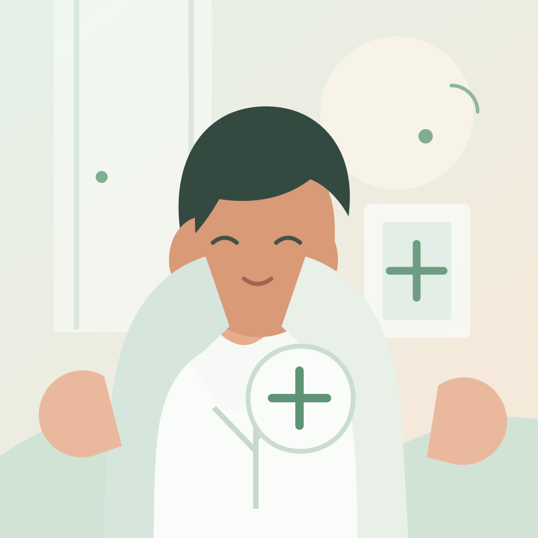

Cardiologia
Prevenção e cuidado para a saúde do coração.
↗Uma clínica feita para ouvir você. Encontre profissionais, conheça nossas especialidades e solicite seu atendimento em um só lugar.
Atendimento próximo e humano
Uma equipe pronta para acolher você.

A Vida & Saúde nasceu da vontade de tornar o cuidado médico mais acessível, próximo e claro. Reunimos diferentes especialidades em um ambiente pensado para que cada pessoa se sinta ouvida.
Nossa missão é cuidar de cada etapa da sua jornada de saúde com respeito, atenção e informação de confiança.
Conheça nossa equipeProfissionais de diferentes áreas para acompanhar você em cada fase da vida.
Prevenção e cuidado para a saúde do coração.
↗Saúde da pele, cabelos e unhas em cada etapa.
↗Acompanhamento cuidadoso para os pequenos.
↗Movimento e bem-estar para a sua rotina.
↗Atenção integral, prevenção e orientação.
↗Cuidado próximo para a saúde da mulher.
↗Prevenção e cuidado com a saúde dos olhos.
↗Uma equipe dedicada a oferecer um atendimento respeitoso e atento às suas necessidades.
| PROFISSIONAL | ESPECIALIDADE | DIAS DE ATENDIMENTO | HORÁRIO | Ação |
|---|---|---|---|---|
| ASDra. Ana SilvaCorpo clínico | Cardiologia | Segunda e quarta | 08h às 12h | ↗ |
| CSDr. Carlos SouzaCorpo clínico | Ortopedia | Terça e quinta | 14h às 18h | ↗ |
| MLDra. Mariana LimaCorpo clínico | Pediatria | Segunda e sexta | 08h às 12h | ↗ |
i Os horários informados são uma referência. Confirme a disponibilidade ao solicitar seu atendimento.
Conte como podemos ajudar. Nossa equipe entrará em contato para orientar você sobre os próximos passos.
Este é um protótipo acadêmico. A clínica, os profissionais e os contatos são fictícios.